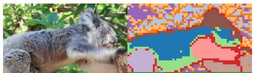

Attention-Guided Cross-Temporal Clustering for Self-Supervised Video Object Segmentation Waqas Arshid, Mohammad Awrangjeb, Alan Wee-Chung Liew, Yongsheng Gao。 arXiv Thu batch; MIR journal; self-supervised VOS 原文链接
Figureure 1 · : Overview of the proposed $\mathrm { C T C ^ { 2 } }$ frameworkFig. 1: Overview of the proposed $\mathrm { C T C ^ { 2 } }$ framework. Consecutive frames It and ${ \mathbf { I } } t + \Delta t$ are encoded by a frozen SAM2 ViT backbone. The [CLS] attention map guides adaptive token selection, retaining only the most salient and spatially diverse regions. A lightweight MLP head clusters these tokens into soft part assignments. Cross-temporal matching aligns part distributions via cosine similarity across mul tiple temporal ofsets, while a saliency-weighted symmetric KL divergence enforces temporal consistency.这张图概括 Attention-Guided Cross-Temporal Clustering for Self-Supervised 的整体方法流程。阅读时先看模块之间传递的训练信号，再看作者如何把目标拆成可优化的子问题。

(c)(c)这张图来自论文 PDF 的结构化抽取。当前用于辅助理解 Attention-Guided Cross-Temporal Clustering for Self-Supervised 的方法或实验，请结合正文精读段落一起看。
核心问题
视频对象分割是检验时空表征质量的典型任务，这篇直接使用 self-supervised temporal clustering 学 part-aware video representations。